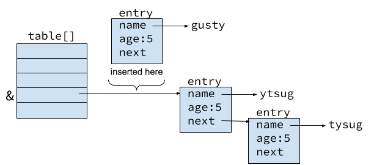

In this lab you will practice your C programming.
Before designing and writing code, you may want to read The C Programming Language (second edition) by Brian W. Kernighan and Dennis M. Ritchie or whatever C book you have used in your studies.
In this lab, there are several questions for you to answer. Questions are in boxes with a light orange background. Write each question and its answer in your notebook. Take photo(s) of your questions/answers and submit the photo(s) on Canvas.
The Linux grep command can be helpful on C programming using Linux with a terminal and on some questions. For example, suppose a question asks you about the struct proc. You can discover the definition and uses of the struct proc by issuing the following Linux grep command in the kernel directory.
$ grep "struct proc" *.h
proc.h:struct proc {
... lots of matches
proc.h:struct proc *find_proc(int pid);
proc.h:bool enqueue_proc(struct proc *p);
% grep "struct proc" *.c
main.c: struct proc *p = NULL;
... lots of matches
proc.c: struct proc *p = init_proc;
proc.c: struct proc *p = new_proc(name, priority, ppid);
In the directory of your xv6-labs, create two files: answers-firstlab.txt and time.txt that I may use if I run your code using your zip file submission. The answers-firstlab.txt is a blank file. The time.txt file contains the number of hours you spent on the lab.
$ echo > answers-firstlab.txt $ echo 8 > time.txt
Fetch the xv6 source for the lab and check out the firstlab branch:
$ git fetch $ git checkout firstlab $ make clean
Xv6 is a relatively small system. It has a little over 6,000 lines of C code - approximately 5K lines of .c files and 1K lines of .h files. Even though 6,000 lines of C code is small in the big scheme of software, it is probably large considering your experience of software development. We tend to teach point-specific algorithms like how to write a recursive function, how to find the largest number in an array, how to implement a linked-list. Most likely your largest program/system was in CPSC 240. All imperative programs are collections of data structures and algorithms. When you have a large system that is many lines of code, you need a way to organize the data structures and algorithms into a collection of files that makes sense and allows you to visualize the organization so that you can easily edit the pieces to add new capabilities and fix bugs. This compartmentalization allows you to think about the program in chunks.
The CPSC 240 project in my class was about 1,300 lines of Java code. Java is an object-oriented language. In Java (and other OO languages), you organize large programs by creating classes, where the code for each class is placed in .java files. Classes implement abstract data types that have private and public data and methods (or functions). Sometimes you create a base class and extend it. For example, in my CPSC 240 class we created a bicycle database program that had an inventory of bicycle parts. There was a basic Part class that was extended to become the BikePart class. Other classes included a BikeDB class, a WareHouseFactory class, a WareHouseManager class, a SalesAssociate class, and an OfficeManager class. Some of these classes used design patterns that were pictorially represented with UML diagrams (perhaps you recall design patterns and UML). All of the various classes are brought together by a Main.java class that created the program. Not all classes are used to create objects. For example, the Main.java class has static functions that are not members of a class.
C is not an object-oriented language so you cannot create classes, but you can create abstract data types and organize your program as a collectin of files. I will use the term module to describe C's organizing technique. In C, you package together data structures and algorithms in a .h and .c files.
The source code files and Makefile for the hash table program are in the xv6-labs/notxv6 directory. Be sure you have entered the $ git checkout firstlab command before looking for the files.
Suppose you wanted to create a hash table abstract data type in C. In our example, a hash table is a fixed size array of entries. Each entry has a name, age, and a pointer to an entry. A hash function hashes the name to select the index into the array. If that index is occupied and the name is not in the linked list, you place the name and age at the front of the linked list. For our example, we have three functions
1. What is a C string?
For this example, we will insert a string into the hash table. To create this hash table module in C, you would create two files, hash.h and hash.c.
The hash.h file could look like the following.
#define NBUCKET 5
#define NKEYS 100000
struct entry {
char *name;
int age;
struct entry *next;
};
void put(char *name, int age);
int get(char *name);
void printhash();
2. Suppose struct entry's member name was defined as char name[16]. Describe how this definition is different than char *name.
Note that this hash.h exposes the internal struct entry data structure, which the user does not need to know. We could work around this, but for now we leave this as is, because we want the hash.c file to #include hash.h to use struct entry.
The hash.c file contains the three global (or public) functions - put(), get(), and printhash() and several helper functions. We begin by examining the helper function get_entry(), which has the following attributes.
Good programmers first understand the data structures, which make understanding the algorithms easier. I like to visualize the data structures. The array table[] is an array of pointers to struct entry. This results in an array where each entry is a linked list of struct entry. The definition includes the keyword static, which means that the variable table can only be accessed by function defined in the file hash.c.
statuc struct entry *table[NBUCKET];
A visual representation of the table[] array data structure can be seen in the following figure. You should notice that the name member of the structure is type char*, which points to a C string.

If you examine the figure while studying the code for get_entry(), the code is easy to understand.
static struct entry *
get_entry(char *name)
{
struct entry *e = 0;
for (e = table[hash(name) % NBUCKET]; e != 0; e = e->next) {
if (strcmp(name, e->name) == 0)
break;
}
return e;
}
3. Explain the for loop in the above code.
4. Explain (in your own words) the difference between a function that is defined with the static keyword and one that does not have the static keyword.
You notice the function hash(name) is called by get_entry(). The argument to hash is a char*, which is an address of type char. In C, a char is an 8-bit quantity that typically contains ASCII characters, but it simply contains 8-bit integers, and the 7-bit encoding fits nicely in an 8-bit integer. For example, the following demonstrate various uses of char, along with valid calls to the funtion hash().
char a = 'G'; // The ASCII character for G, which is 71
char b = 71; // The number 71
char c = 0x47; // The number 71 in hex
char d = 0b01000111; // The number 71 in binary
char e[] = "Gusty"; // An array with 'G','u','s','t','y',0
char f[] = {71, 117, 115, 116, 121, 0}; // same contents as e
char *g = "Gusty"; // a pointer to the string Gusty\0
char *h = malloc(6);
strcpy(h, "Gusty"); // h points to the string Gusty\0
int v = hash(e); // e is type char*
v = hash(f); // f is type char*
v = hash(g); // g is type char*
v = hash(h); // h is type char*
The key concept is to recognize that the char *name argument passed to hash() is the address of a C string,
which is an array with the following attributes.
The hash algorithm in hash() is not a very good hashing algorithm (consider that "gus" and "sug" hash to the same value), but it works for this example.
static int hash(char *name) {
char *initname = name;
int hashval = 0;
while (*name)
hashval += *name++;
return hashval;
}
5. What is printed by the following code?
char x = 0x49;
printf("%c\n", x);
Now that you understand get_entry(), you can easily understand the function put(). Understanding the function insert() requires you to understand and visualize C pointers.
void
put(char *name, int age)
{
struct entry *e = get_entry(name);
if(e){
e->age = age; // update the existing key.
} else {
// don't use address passed in case it is reused or local
char *uniquename = malloc(strlen(name)+1);
strcpy(uniquename, name);
int i = hash(uniquename) % NBUCKET;
insert(uniquename, age, &table[i], table[i]);
}
}
put() calls get_entry(). If an entry is found, put() updates the age;
otherwise, put() calls insert() to insert the name and age
into the hash table. When creating a new entry, put() creates a copy of the
name passed to it. This is important because the name passed may change.
Consider a char[] name that contains "emily" when passed to put(), but later is
changed to be "mandy". If put() inserts the address passed (instead of making a copy), the
entry will be changes to "mandy". This is not what is desired.
The tricky part of this code is the call to insert() with actual aguments &table[i] and table[i]. You must examine the figure above and the code in insert() to understand these arguments. Consider we are attempting to insert an entry with "Gusty" and age 5, where table[] already has entries for "ytsug" and "tysug" as shown in the diagram. The "gusty" entry will be inserted at the front of the list of entries pointed to by table[3]. The address in table[3] is the address of the entry for "ytsug". The expression &table[3] is the address of table[3]. This allows insert() to perform the desired insertion.
static void
insert(char *name, int age, struct entry **p, struct entry *n)
{
struct entry *e = malloc(sizeof(struct entry));
e->name = name;
e->age = age;
e->next = n;
*p = e;
}
6. Describe a scenario where if put() would mess up if it did not make a copy of the string by calling malloc() and strcpy().
7. What is difference between the following two #include statements?
#include <stdlib.h> #include "hash.h"
The gcc program invokes the Gnu C compiler system. I use the word system because gcc is a wrapper for various "programs".
Invoking gcc on a single .c file runs the preprocessor, compiler, and linker creating the a.out executable file. You never see the output from the preprocessor or the object file generated by the compiler. You can change the name of the executable with the -o option. You can generate the object file with the -c option. You can list multiple .c files on the input line to gcc The .h files are not placed on the input line to gcc. .h files are included by the .c files.
$ gcc myprog.c → a.out $ gcc -o myprog myprog.c → myprog $ gcc -c myprog.c → myprog.o $ gcc -o myprog file1.c file2.c → myprog
The make utility allows you to define the relationships between the various files that compose your program in a Makefile. When you invoke make, it reads the Makefile and "makes" your program. You can alternatively name your Makefile as makefile. The Makefile for our hash program is simple, shown as follows.
# makes hashprog and hashprogDebug # $ make # $ make all # $ make hashprog # $ make hashprogDebug # $ make clean all: hashprog hashprogDebug FLAGS = -Wall hashprog: main.c hash.h hash.c @echo 'building hashprog.' gcc -o hashprog main.c hash.c $(FLAGS) hashprogDebug: main.c hash.h hash.c @echo 'building hashprogDebug.' gcc -o hashprogDebug -DDEBUG main.c hash.c $(FLAGS) clean: rm -f hashprog hashprogDebug *.o
We first focus the hashprog target. hashprog is the program we want to build, which is dependent upon three files: main.c, hash.h, and hash.c. If the dates on any of the three dependent files are newer than the date of the file hashprog, then the commands under the dependency are executed, which in this case is gcc to create the program hashprog. To make hashprog, you invoke make with the target hashprog
$ make hashprog
Notice how the variable FLAGS is defined and used on the gcc command.
Most Makefiles have a clean target which is used to clean up various files so we can start fresh. Notice that we do NOT clean up our .c and .h files.
If you invoke make without a target - simply $ make, it will make the first target, which is all, which means it makes both hashprog and hashprogDebug. When making hashprogDebug, the define variable DEBUG is passed to the compiler. The file hash.c has some conditional code that is bracketed, which is compiled with the DEBUG is defined.
static int hash(char *name) {
#ifdef DEBUG
char *initname = name;
#endif
int hashval = 0;
while (*name)
hashval += *name++;
#ifdef DEBUG
printf("name: %s, hashval: %d, index: %d\n", initname, hashval, hashval % NBUCKET);
#endif
return hashval;
}
8. What is the gcc command that is executed if I invoke $ make hashprog?
The main.c file uses the hash module to create a program. The function main() is the entry point for C programs. The function main() has two arguments - int argc and char **argv. The argc argument has the number of arguments passed to main. For example, if we invoke hashprog as
$ hashprog gusty cooperthe value of argc will be three because there are three arguments passed to main(). The three arguments are hashprog, gusty, and cooper. By convention, the name of the program as it was invoked in the shell is the first argument. The values in char *argv[] will be.
argv[0] → "hashprog" argv[1] → "gusty" argv[2] → "cooper"
The main() program for hash program uses arguments 1 and 2, if they are present, to create an entry in the hash table. argv[1] is the name and argv[2] is an age. The values of argv[] are pointers to C strings. In the case where argv[2] is an age, the string must be converted to an integer using the atoi() function.
The file main.c demonstrates various ways to define C strings and pass them to the put() function in the hash module. You should study the code to see these various C strings.
You can do these labs on our CPSC server or on your own computer. If you use your own computer, have a look at the lab tools page for setup tips.
9. What does it mean to boot (which is short for bootstrap) a computer?
Fetch the git repository for the xv6 source for the lab:
$ git clone https://github.com/gustycooper/xv6-labs.git Cloning into 'xv6-labs'... ... $ cd xv6-labs
The repo is setup so that git checkouts the riscv branch when cloning the repo. You must switch to the firstlab branch to conduct this lab.
$ git status On branch riscv Your branch is up to date with 'origin/riscv'. nothing to commit, working tree clean $ git checkout firstlab
The xv6-labs repository differs slightly from the book's xv6-riscv; it mostly adds some files. If you are curious look at the git log:
$ git log
The files you will need for this and subsequent lab assignments are distributed using the Git version control system. For each of the labs you will checkout (git checkout firstlab) a version of xv6 tailored for that lab. To learn more about Git, take a look at the Git user's manual, or, you may find this CS-oriented overview of Git useful. Git allows you to keep track of the changes you make to the code. For example, if you are finished with one of the exercises, and want to checkpoint your progress, you can commit your changes by running:
$ git commit -am 'my solution for firstlab lab exercise 1' Created commit 60d2135: my solution for firstlab lab exercise 1 1 files changed, 1 insertions(+), 0 deletions(-) $
You can keep track of your changes by using the git diff command. Running git diff will display the changes to your code since your last commit, and git diff origin/firstlab will display the changes relative to the initial firstlab code. Here, origin/firstlab is the name of the git branch with the initial code you downloaded for the class.
Build and run xv6:
10. The Xv6 Makefile has many targets. Locate the target qemu for the command make qemu and explain what it does.
$ make qemu riscv64-unknown-elf-gcc -c -o kernel/entry.o kernel/entry.S riscv64-unknown-elf-gcc -Wall -Werror -O -fno-omit-frame-pointer -ggdb -DSOL_UTIL -MD -mcmodel=medany -ffreestanding -fno-common -nostdlib -mno-relax -I. -fno-stack-protector -fno-pie -no-pie -c -o kernel/start.o kernel/start.c ... riscv64-unknown-elf-ld -z max-page-size=4096 -N -e main -Ttext 0 -o user/_zombie user/zombie.o user/ulib.o user/usys.o user/printf.o user/umalloc.o riscv64-unknown-elf-objdump -S user/_zombie > user/zombie.asm riscv64-unknown-elf-objdump -t user/_zombie | sed '1,/SYMBOL TABLE/d; s/ .* / /; /^$/d' > user/zombie.sym mkfs/mkfs fs.img README user/xargstest.sh user/_cat user/_echo user/_forktest user/_grep user/_init user/_kill user/_ln user/_ls user/_mkdir user/_rm user/_sh user/_stressfs user/_usertests user/_grind user/_wc user/_zombie nmeta 46 (boot, super, log blocks 30 inode blocks 13, bitmap blocks 1) blocks 954 total 1000 balloc: first 591 blocks have been allocated balloc: write bitmap block at sector 45 qemu-system-riscv64 -machine virt -bios none -kernel kernel/kernel -m 128M -smp 3 -nographic -drive file=fs.img,if=none,format=raw,id=x0 -device virtio-blk-device,drive=x0,bus=virtio-mmio-bus.0 xv6 kernel is booting hart 2 starting hart 1 starting init: starting sh $
If you type ls at the prompt, you should see output similar to the following:
$ ls . 1 1 1024 .. 1 1 1024 README 2 2 508 kittycat.txt 2 3 597 xargstest.sh 2 4 93 cat 2 5 32848 echo 2 6 31696 forktest 2 7 15832 grep 2 8 36224 init 2 9 32200 kill 2 10 31664 ln 2 11 31480 ls 2 12 34792 mkdir 2 13 31712 rm 2 14 31704 sh 2 15 54144 stressfs 2 16 32592 usertests 2 17 180488 grind 2 18 47536 wc 2 19 33800 zombie 2 20 31064 kittycat 2 21 32864 sleep 2 22 31208 pingpong 2 23 31224 primes 2 24 31208 find 2 25 31208 xargs 2 26 31208 console 3 27 0These are the files that mkfs includes in the initial file system; most are programs you can run. You just ran one of them: ls. Several of the files are templates that you must design, edit, and test as part of this lab. Here are a couple more commands for you to enter.
$ echo kittycat kittycat $ cat kittycat.txt This is the text in the file kittycat. Soft kitty, warm kitty, little ball of fur! Happy kitty, sleepy kitty, purr purr purr! Xv6 kitty, Xv6 kitty, grrr, grrr, grrr! And the cat's in the cradle and the silver spoon Little boy blue and the man in the moon "When you coming home, dad?" "I don't know when" But we'll get together then You know we'll have a good time then A long tailed cat sitting by the old rocking chair Now he don't realize that there's a danger there But he don't care no rock 'n' roll chair is gonna boogie on his day 'Cause when his tail took a low down, syncopate, yeah
xv6 has no ps command, but, if you type Ctrl-p, the kernel will print information about each process. If you try it now, you'll see two lines: one for init, and one for sh.
To quit qemu type: Ctrl-a x (press Ctrl and a at the same time, followed by x).
You will see that I have included hashprog as a utility program in Xv6. I have combined hash.h, hash.c, and main.c into one file hashprog.c which is located in the user directory. Xv6 allows programs to be in multiple files; however, it is simpler when they are in one.
You will also see that the #include files have been changed to support Xv6 style programming for utility programs. When you make Xv6, you are building an entire system - the OS, device drivers, and utility programs. You must select Xv6 include files - not those installed on the Linux system. The Xv6 include files are in the directories kernel and user. From the Xv6 terminal, you must run the hash program as follows.
$ hashprog $ hashprog name 222
Firstlab is a review and practice of C programming to get you warmed up to perform Xv6 programming. You also get an introduction to struct proc, which is the kernel's data structure for manageing processes. You have to implement a doubly linked list of process structures (or process control blocks). You are provided several files to start your program. The files are located in the notxv6/firstlab directory.
11. Describe the differences between the Makefile for the hash program and the Makefile for the firstlab probram.
pname: kernel_process, pid: 1024, ppid: 1024, priority: 0, state: RUNNABLE pname: Emily, pid: 1026, ppid: 1025, priority: 3, state: EMBRYO pname: Gusty, pid: 1025, ppid: 1024, priority: 5, state: EMBRYO
$ make $ ./firstLab < test1_in.txt # displays output in terminal $ ./firstLab < test1_in.txt > test1_actual.txt # places output in file.txt $ diff test1_actual.txt test1_out.txt # compares actual output to expected
This completes the lab.
Read Lab Submissions for instructions on how
to submit your lab. In addition to the normal submission requirements, please include your answer to the following question in your answers-firstlab.txt file.
12. Discuss your C programming skills.
Submit the lab